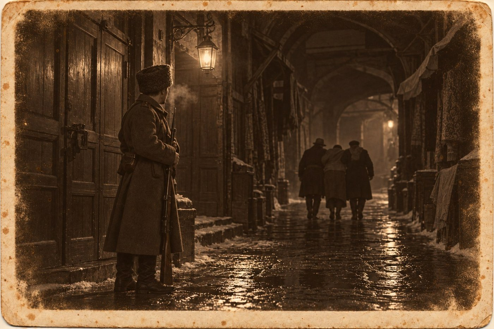

Присяга

Происшествия
«Тифлисский листок», 12 января 1905 года
В ночь на 11 января в кладовой мануфактурного магазина А. М. Читахова в Тёмных рядах найден повесившимся приказчик Гарегин Мелконов, 22 лет. Записки при нём не оказалось. Причины самоубийства неизвестны.
1
В этой заметке правда всё, кроме одного слова. Писал её не я, а поправки газета не дала.
Повестку мне принесли ещё перед Рождеством. Тифлисский окружной суд вызывал меня свидетелем по делу об убийстве приказчика Саакова на двенадцатое января, к десяти часам утра. Я показал её князю. Он прочёл, выпил воды и спросил, кем я вызван. Вызван я был обвинением.
— Защите вы не нужны, — сказал князь. — Защите довольно копировальной книги. Вы нужны затем, чтобы спросить вас под присягой, что говорил мальчик в ту ночь у отца в доме.
Я помнил, что он говорил. Он передал слова покойного: «А пойдёшь в полицию, так я расскажу, к каким знакомым ты ходишь по четвергам». Князь стоял рядом и слышал то же. В его протоколе на четырёх листах слово «знакомые» стояло один раз, а слова «четверг» не было.
Ротмистр Вележев в декабре сказал, что в третий раз спрашивать меня не будет. Он и не спросил. За него спросит товарищ прокурора, в присутствии трёх судей и священника, и ответить «подумаю» там нельзя.
Всё, что я мог сказать суду, умещалось в одно слово, и больше я ничего не знал. Я не знал ни фамилий, ни дома, где собирались по четвергам, и до сих пор считал это своей заслугой: в декабре мне предлагали спросить у тётки, и я не спросил. Но слово было сказано при приставе, и пристав его не записал. Скажу я его на суде, и окажется, что князь Атенели три месяца назад утаил от следователя показание. Не скажу, и окажется, что я солгал под присягой в первый же раз, как меня к ней привели.
Одиннадцатого утром я пошёл в участок спросить, что мне делать. Сидоренко сказал, что его сиятельство с рассвета в Тёмных рядах, у Читахова, и что там опять покойник.
2
Кладовая была за магазином, в четырёх шагах от задней двери, без окна. Князь Луарсаб Атенели вошёл в неё с лампой и первым делом сосчитал крюки под потолком. Их было шесть, для тюков, и на третьем от двери висел младший приказчик.
Верёвка была упаковочная, здешняя, такой в рядах увязывают сукно. Под ногами лежал на боку ящик из-под коленкора. Городовой врач сказал, что смерть наступила от удавления, часу в первом ночи, и что следов борьбы он не видит. Ключ от задней двери нашёлся у покойного в кармане, дверь была притворена.
Читахов стоял в магазине у кассы, седой и грузный, и за три месяца постарел на десять лет.
— Ему завтра было показывать в суде, — сказал он. — Про ключ, который он дал моему сыну. Он с осени ходил сам не свой. Он говорил мальчику, что без этого ключа ничего бы не было.
Князь кивнул. Объяснение было хорошее, и в рядах его приняли раньше, чем приехал врач: человек дал ключ, ключом отперли смерть, перед судом совесть не выдержала. Князю оно не нравилось одним. Мальчик-рассыльный, спрошенный по-армянски, сказал, что Гарегин в эту кладовую после темноты один не ходил никогда и посылал его, потому что боялся крыс.
С девятого числа, когда пришли телеграммы из Петербурга, у входа в ряды по ночам ставили солдат. Нынешний патруль ещё не сменился, и князь велел позвать всех троих.
Они стояли перед ним в шинелях и папахах, с винтовками у ноги: ефрейтор и двое рядовых. Князь спросил, кто проходил ночью в ряды. Ефрейтор ответил, что никто не проходил, ваше сиятельство, и не видали никого. Рядовые подтвердили.
Князь слушал. Сорок лет он слушал так людей в этом городе: сперва откуда человек, потом боится ли, потом врёт ли. Кахетинца от имеретина он отличал с двух слов, и по одному тому, как имеретин тянет ответ, знал, выдумывает тот или вспоминает. Вятского от самарского он не отличал. Перед ним стояли три русских солдата, говорили три одинаковые фразы, и он не слышал в них ничего, кроме устава. Врать могли все трое, или один, или никто.
Месяц назад во дворе у шапочников было то же самое, но там он хотя бы знал, что языка не понимает. Здесь он понимал каждое слово, и толку от этого не было.
Он отпустил патруль и стал считать ящики в кладовой. Их было девять, и лежали они у стены, далеко от третьего крюка. Тот, что валялся под покойным, надо было нести через всю кладовую, в темноте, человеку, который боялся крыс.
В дверях магазина стоял мальчик из Казани, в пальто, за которое он до сих пор платил. Читахов увидел его, отвернулся и ушёл в контору. Мальчик на дядю не смотрел. Он смотрел вслед солдатам, и лицо у него было такое, как во дворе у шапочников.
3
Я стоял в дверях и слышал, как отвечали солдаты. Ефрейтор налегал на «о» круче моей тётки и частил, как частят за Вяткой. Второй рядовой говорил мягко, по-южному. Третий сказал всего четыре слова, «так точно, не видали», и я бы ничего в них не расслышал, если бы не то, что было потом.
Они вышли из рядов на свет и остановились закурить. Ефрейтор докурил первым, затоптал окурок и сказал, что пора. Третий ответил ему:
— Айда, что ли.
Этого слова я не слышал с сентября. В Казани им зовут гулять, гонят корову и торопят извозчика, оно у нас общее с татарами, и по всей Волге вниз от Казани его говорят не думая. В Тифлисе его не говорил никто.
Я догнал их у фонаря и спросил третьего, откуда он родом. Он посмотрел на ефрейтора. Ефрейтор посмотрел на моё пальто и разрешил.
— Самарской губернии, — сказал солдат. — Из Шенталы.
Я сказал, что я казанский, с Проломной, и что отец мой держал там аптеку. Он кивнул так, как кивают соседу через забор: Казань от них была не близко, но в ту же сторону. Лица его под папахой я почти не разглядел, а голос запомнил. Он говорил негромко, ровно и не прибавлял лишнего.
Про Шенталу я не слыхал никогда и, чтобы продолжить разговор, блеснул своим аптечным немецким. Я сказал, что название, должно быть, от колонистов: «шён таль», красивая долина.
— Немцев у нас отродясь не было, — сказал он. — А долина хорошая.
Ефрейтор засмеялся, и я вместе с ним. Князь поправлял мне грузинские буквы, шапочники поправляли мой немецкий, а теперь меня поправил рядовой из-под Самары, и всякий раз за дело.
Я спросил, как его зовут. Он назвался Павлом Васильевым. Ефрейтор был Гущин, вятский, я угадал. Второй рядовой, Шевчук, стоял поодаль и в разговор не входил.
Они пошли к казармам. Я пошёл рядом и молчал до угла, потому что не знал, как спросить о том, о чём уже спрашивал пристав. На углу Гущин с Шевчуком завернули в лавку за табаком, и мы с Васильевым остались вдвоём.
4
— Вы приставу сказали, что никого не видали, — начал я.
— Ефрейтор сказал.
— А вы?
Он помолчал и поглядел на дверь лавки.
— Нам стоять было у ворот и смотреть, чтобы народ не собирался. Трое или четверо не народ. Гущин их пропустил, а утром там покойник. Теперь ему выходит, что он пропустил. Он человек не худой, ему лычка нелегко далась.
— Кого он пропустил?
— Шли четверо, в первом часу. Двое в шинелях, как у студентов, с пуговицами, вели третьего под руки. Тот ногами перебирал, а головы не держал. Шевчук говорит: пьяного ведут. Я рядом стоял, как они проходили. Вином от него не пахло.
— А четвёртый?
— Четвёртый шёл сзади, шагов на пять. Те двое торопились и оглядывались, а он не торопился. Так ходят по делу, когда знают куда.
Я спросил, каков он был собой. Васильев сказал, что фонарь горел у ворот один и что четвёртый шёл по той стороне, где темно. Роста среднего, в коротком пальто, в шапке. Больше он ничего не видел и выдумывать не стал.
— Вы сказали бы это приставу?
— При ефрейторе нельзя, а без ефрейтора нашего брата не спрашивают. А я вам вот что ещё скажу, раз вы с Волги. Меня утром поставили у той кладовой, пока доктор не приехал. Я на верёвку глядел.
Он показал руками, не выпуская винтовки: одна рука тянет вниз, другая заводит конец.
— На крюке она завязана внатяг. Так воз увязывают: один на верёвке виснет, другой вяжет, тогда узел садится мёртво и не ползёт. Одному так не затянуть. Если человек сам, он сперва привяжет, а после повиснет, и узел у него под ним сядет иначе, с петлёй. Я возов перевязал довольно.
— Значит, вязали двое.
— Вязали двое. А сколько их там было, я не знаю, я в кладовой ночью не был.
Из лавки вышли Гущин с Шевчуком. Васильев поправил ремень и сказал, уже другим голосом, что под бумагу он этого не покажет, покуда ефрейтор не велит, а ефрейтор не велит.
Я сказал, что понимаю. Он кивнул, сказал «бывайте» и пошёл догонять своих. Шагал он широко, по-деревенски, и винтовку нёс, как несут косу.
Я остался на углу с тем, что у меня было: четверо в первом часу, узел, завязанный вдвоём, и свидетель, который сказал мне это по-соседски и больше не скажет никому. Князь слышит в этом городе всех. Этого человека услышал я, и то потому, что он сказал «айда».
5
Вечером дворник поднялся ко мне и сказал, что внизу стоит гимназист, фамилии не говорит, а спрашивает брата Рубена Читахова. Дворник был недоволен: гимназист стоял в подворотне с шести часов и пугал кошку.
Он оказался мал ростом, в шинели, застёгнутой до горла, и с первого слова стал извиняться, что пришёл. Наверх идти он не захотел. Мы встали под лестницей, и он заговорил быстро, как отвечают урок, который боятся забыть.
— Я с Рубеном в одном классе. Я не скажу, как меня зовут. Вы завтра свидетель, я знаю. Я хочу, чтобы вы ему передали, если увидите: я не знал. Я думал, мы только поговорим.
Я спросил, с кем они хотели поговорить. Он посмотрел на меня с удивлением: он был уверен, что я знаю всё.
Собирались они по четвергам, у одного студента, которого осенью исключили. Студент доставал брошюры, они читали вслух и спорили, что будет, когда не будет ни армян, ни грузин, ни русских, а будут одни трудящиеся. Рубен ходил с весны. Записки ему носил Гарегин, через заднюю дверь магазина, и Гарегин знал в лицо всех, кто за Рубеном заходил.
— А три раза приходил ещё один человек. Он не садился и стоял у двери. Он ничего не читал и не спорил, только слушал. Студент при нём говорил тише. Его звали Мгели.
— Это фамилия?
— Это значит волк, по-грузински. Только он, кажется, не грузин. Я не знаю, кто он. Как его зовут по-настоящему, никто не знал.
Вчера студент сказал, что Гарегина вызвали в суд и что с ним надо поговорить, чтобы он про ключ показал, а про записки и про заднюю дверь промолчал. Они дождались его у духана и пошли втроём. Мгели шёл сзади. В подворотне за рядами Гарегин остановился и сказал, что врать не будет.
— Он сказал: я присягу дам. Я перед крестом врать не стану, я и так из-за ключа не сплю. Студент начал ему объяснять про общее дело. Тогда тот подошёл сзади и взял его за шею, вот так, рукой, будто обнял. Гарегин сел. Тот говорит: ему дурно, ведите в лавку, ключ у него в кармане. Мы повели. Там стояли солдаты, я думал, они нас остановят. Они не остановили.
У него стучали зубы, и он прижал подбородок кулаком.
— В кладовой он мне сказал: ступай домой, гимназист, тебе завтра на уроки. Я ушёл. Студент остался. Утром в классе сказали, что у Читаховых приказчик повесился.
Я спросил, пойдёт ли он к приставу. Он замотал головой. Я спросил, как фамилия студента. Он попятился от меня в подворотню.
— Вы завтра и так скажете, — сказал он. — Вас приведут к присяге, и вы скажете. Мне нельзя, он знает, где я живу.
Он убежал раньше, чем я успел ответить, что сказать мне нечего. Я не знал ни его фамилии, ни фамилии студента. Я знал теперь одно слово сверх прежнего, и это слово было кличка.
6
Мальчик из Казани пришёл в десятом часу, без тетради, и рассказал всё стоя: про солдата из Самарской губернии, про узел, про гимназиста под лестницей. Князь Атенели слушал и считал. Свидетелей выходило двое. Первый под бумагу не покажет, пока не велит ефрейтор. Второй не назвал себя и убежал.
— С этим к следователю не ходят, — сказал князь. — Рядового я вызвать могу, но при ефрейторе он скажет «не видали», и будет прав по-своему. Гимназиста я найду через директора за два дня. Суд завтра.
— Что мне говорить завтра?
Князь налил воды. С утра он выпил четыре графина и знал, что это много даже для него.
Он думал о слове, которого не записал. В октябре он рассудил так: мальчику шестнадцать лет, знакомые его читают брошюры, и если слово «четверг» ляжет на бумагу, бумага уйдёт к ротмистру вместе с мальчиком. Он оставил мальчика себе и суду, а знакомых оставил в покое. Он считал это хорошей работой.
Теперь он считал иначе. С двенадцатого октября по одиннадцатое января прошёл девяносто один день. Стой это слово в протоколе, студента с его четвергами взяли бы в ту же неделю, и вместе с ним, может быть, человека, который стоял у двери и не садился. Младший приказчик, боявшийся крыс, дошёл бы завтра до суда и дал бы свою присягу. Князь пожалел одного мальчика и не подумал о другом, а другому было двадцать два года.
— Вы скажете то, что слышали, — сказал он. — Слово в слово. Присягу дают один раз, господин Васянин, второй у человека не бывает.
— Тогда спросят вас.
— Спросят. Я отвечу, что слово было сказано при мне и что я его не записал.
— Вам за это будет.
— Будет выговор, и ротмистр станет здороваться со мной ещё ласковее. Он осенью сказал, что мне служить недолго. Он редко ошибается.
Мальчик хотел возразить, и князь поднял руку.
— Вы не о том думаете. Вы думаете, что топите меня. Меня утопил не свидетель Васянин, а пристав Атенели, три месяца назад, собственной рукой. Вы завтра только скажете, который час.
Он проводил его до лестницы и сосчитал ступени, хотя знал, сколько их. Потом вернулся на балкон и взял клочок бумаги. Он написал на нём одно слово, по-грузински, пять букв, и положил под графин.
Этого слова он в городе раньше не слышал, а он слышал в городе всё.
7
Присяжных в нашем крае не заведено, и Рубена судили трое судей в мундирах. Публику председатель удалил ещё до чтения обвинительного акта, по малолетству подсудимого. В зале остались свидетели, защитник, товарищ прокурора и на последней скамье человек в штатском, с тростью между колен.
Рубена ввели двое конвойных. За три месяца он вырос из тужурки, и руки торчали из рукавов. Он поискал глазами мать, не нашёл и сел.
Председатель Сухотин объявил, что свидетель Мелконов в суд не явился, потому что умер в ночь на одиннадцатое. Рубен поднял голову. Ему, как я понял, никто не сказал.
Свидетелей подвели к аналою. Священник был старый, с простуженным голосом, и увещание прочёл скороговоркой, а присягу медленно, чтобы мы успевали повторять. Я повторял вместе с городовым врачом и Сидоренкой; дядю Аршака и рассыльного мальчика перед тем привёл к присяге армянский священник, у другого аналоя. Мы обещали показать сущую правду, не увлекаясь ни дружбою, ни родством, ни ожиданием выгод. На слове «родством» дядя, уже сидевший на скамье, посмотрел на меня. Потом мы по очереди поцеловали крест и Евангелие.
Защитник, присяжный поверенный Тер-Акопов, поднялся и заявил, что свидетель Васянин приходится подсудимому двоюродным братом и что защита против его присяги не возражает. Председатель кивнул. Я понял, что мне оставляли выход и что выход только что закрыли, с моего же согласия.
Меня вызвали вторым, после врача. Товарищ прокурора Клейн был молод, белобрыс и спрашивал вежливо. Он попросил рассказать о копировальной книге. Я рассказал про сумму прописью в скобках, про «каковую» и про зачёркнутое почтение. Судья слева записывал.
— Вы присутствовали при том, как подсудимый признался приставу?
— Присутствовал.
— Передал ли он при этом какую-либо угрозу, сказанную ему покойным Сааковым?
Человек на последней скамье переставил трость.
— Передал. Сааков сказал ему: «А пойдёшь в полицию, так я расскажу, к каким знакомым ты ходишь по четвергам».
— В протоколе дознания этих слов нет.
— Протокола я не писал.
— Известны ли вам эти знакомые?
— Нет.
— Пытались ли вы узнать, кто они?
— Мне дважды предлагали узнать. Я не узнавал.
— Кто предлагал?
Я посмотрел на последнюю скамью. Клейн проследил мой взгляд, слегка покраснел и сказал, что вопросов больше не имеет.
Про гимназиста под лестницей он не спросил, потому что не знал о нём. Про солдата тоже. Я поклялся не утаивать известного мне по сему делу, а Гарегин висел по другому делу, которого не было. Я сел на скамью и до сих пор не знаю, сдержал я в ту минуту присягу или обошёл её.
Потом вызвали князя. Он шёл к судейскому столу медленно, и я вместе с ним сосчитал шаги: одиннадцать.
— Слова о четвергах были сказаны при мне, — сказал он, не дожидаясь вопроса. — Я их слышал и в протокол не внёс.
— По какой причине? — спросил председатель.
— Подсудимому шестнадцать лет. Я рассудил, что за убийство он ответит перед судом, а за чтение брошюр ответит так, что до суда не доживёт. Я рассудил дурно. Свидетель Мелконов мог бы объяснить суду почему.
— Мелконов наложил на себя руки, — сказал Клейн.
— Так записано, — сказал князь. — Записывал я.
8
Рубен встал сам, прежде чем ему дали слово. Конвойный взял его за локоть, и председатель сделал знак оставить.
— Гарегин не вешался, — сказал Рубен. — Он в ту кладовую и днём один не ходил.
Тер-Акопов привстал и что-то сказал ему по-армянски, тихо и сердито. Рубен ответил по-русски, как в ту ночь у отца:
— Я буду говорить. Пусть запишут.
Он говорил, глядя на судейский стол, ровным гимназическим голосом. Три месяца он молчал, потому что считал этих людей товарищами. Они говорили, что товарищей не называют, и он не называл. Гарегин носил ему записки и никому не сделал зла, а про ключ мучился больше, чем он сам про аршин. Если Гарегин умер за день до суда, значит, с ним приходили говорить, и он знает кто.
— Давид Тамразов, шестого класса, — сказал Рубен. — Ираклий Чиладзе, бывший студент, живёт на Авлабаре у вдовы. У него собирались. Был ещё третий, он приходил редко. Имени его я не знаю. Его звали Мгели.
Человек на последней скамье встал и вышел, не дослушав. Трость он нёс в руке и на неё не опирался.
Дядя Аршак сидел через два человека от меня. Он не шевельнулся, пока сын говорил. Потом он повернул голову и посмотрел на меня долго, без злобы, как смотрят на счёт, в котором всё сошлось и платить всё равно тебе. Я выдержал этот взгляд. Присягали мы с ним у разных аналоев, но слова были одни.
Суд совещался сорок минут. Убийство было признано совершённым в запальчивости, без заранее обдуманного намерения. Принято было во внимание, что убитый вымогал у отца подсудимого деньги и угрожал самому подсудимому, а равно и возраст. Рубена Читахова, шестнадцати лет, приговорили к заключению в тюрьме на четыре года, с содержанием отдельно от взрослых.
Он выслушал приговор стоя и спросил только, можно ли ему узнать, где похоронят Гарегина. Председатель ответил, что это к делу не относится.
Тётка Варвара Автономовна ждала в коридоре, на скамье под окном, в чёрном платке. В залу её не пустили. Я сказал ей: четыре года. Она перекрестилась и спросила не про срок.
— Тебя к присяге водили?
— Водили.
— И сказал, как было?
— Сказал.
— Ну и ладно, — сказала она, налегая на «о». — Иван бы тоже сказал. Он оттого и молчал всю жизнь, что врать не умел.
Мимо нас прошёл дядя. Он взял её под руку и увёл, и мне не поклонился. Но у самой лестницы он остановился, не оборачиваясь, и постоял так, пока она поправляла платок. Раньше он не останавливался.
9
Ротмистр Вележев нагнал меня на другой день у редакции, как нагонял в декабре, и пошёл рядом. Провода над мостовой уже никто не тянул, под ним ходил трамвай.
— Я обещал не спрашивать вас в третий раз и не спросил, — сказал он. — Заметьте, что слово я держу. Обе фамилии я получил вчера в одиннадцать часов сорок минут, бесплатно, от самого подсудимого. Вы мне ничего не должны.
— Вы их взяли?
— Чиладзе взят в первом часу, у вдовы на Авлабаре. Тамразов пришёл сам, с матерью, и плачет со вчерашнего вечера. Он славный мальчик и ничего не знает. Чиладзе знает больше и молчит. Он, изволите видеть, убеждён, что молчит за идею, и ему ещё не приходило в голову спросить себя, за чью.
Он остановился у витрины и стал смотреть на шляпы.
— Третьего у меня нет. Кличка не фамилия. Я знаю клички половины города, но этой до вчерашнего дня не слыхал, и это мне не нравится больше, чем я могу вам сказать. Человек приходит три раза, стоит у двери, а когда надо, делает своё дело чужими руками и уходит. Так студенты не работают.
— А Гарегин?
— Приказчик Мелконов повесился, господин Васянин. Так записано в участке, так напечатано в вашей газете. Убийство было бы делом полиции, а у полиции на руках рядовой, который ничего не подпишет, и гимназист, который видел только, как человеку сделалось дурно. Мне же, признаюсь, удобнее, чтобы господин Мгели полагал, будто его не ищут.
— Гарегину от этого не легче.
— Гарегину всё равно. Вы поэт, вы должны понимать, что правда и своевременность не одно и то же.
Он вынул из внутреннего кармана плотный казённый конверт и подал мне.
— Передайте отцу Василию, вам по дороге. Он подклеит. Лист мне больше не нужен: он был нужен, пока вы молчали, а доктор Гурвич, как я слышал, сам лишил его всякой цены. Вы с доктором оба поступили невыгодно, и оба остались при своём. Мне есть над чем подумать.
Я взял конверт. Сквозь бумагу прощупывался край листа, обрезанный по линейке.
— Князю будет выговор, — сказал ротмистр, уже приподняв шляпу. — Не тревожьтесь за него. Он пережил трёх полицмейстеров, переживёт и бумагу. Я, знаете ли, вчера впервые видел, чтобы пристав под присягой показал против собственного протокола. Это у вас семейное или заразное?
Он ушёл, не дожидаясь ответа. Я стоял с конвертом и думал, что у меня в руках подпись моей матери, выведенная буква за буквой, и что получил я её от этого человека даром, потому что перестал быть ему нужен.
10
Конверт я отнёс отцу Василию в тот же день. Он принял его обеими руками, как принимают просфору, и сказал, что Савва Никитич теперь будет спать спокойно. Я попросил позволения взглянуть ещё раз. Он позволил. Хвост у «ч» по-прежнему уходил вниз.
Вечером я пришёл к князю с тетрадью. Он сидел в шинели, на столе стояли лампа и графин, а под графином лежал клочок бумаги.
— Выговор мне объявят в понедельник, — сказал он. — До понедельника я чист. Открывайте четвёртую.
Четвёртую строфу я разбирал сам, по букве, и он поправил меня только дважды. Слов я не понимал, кроме одного. В третьей строке стояло «швили», сын. Князь показал мне это слово в декабре, когда я вернулся от шапочников.
Он перевёл не останавливаясь и воды перед этим не пил.
— «Пять зим я ждал бумаги, и бумага пришла: мне позволено вернуться. Я дошёл до заставы и увидел дорогу на юг. Но за твоими воротами, Нино, растёт сын, и он не мой сын. Пусть ворота стоят запертые: при запертых воротах в доме теплее».
Мы помолчали. Внизу дворник ругал кошку по-грузински, и я понял два слова из пяти.
— Его простили на пятый год, — сказал князь. — Он мог вернуться, как вернулись почти все. Я шестьдесят лет думал, что его не пустили, а он не поехал. Мальчик за воротами родился через год после свадьбы. Это мой отец.
— Значит, он остался в Казани из-за вашего отца.
— Он остался в Казани, чтобы в доме, где рос мой отец, о нём не было разговоров. Дед всё равно до смерти не поминал его имени, а бабка молилась шёпотом. Но мальчик вырос спокойно, и у мальчика потом родился я.
Он налил воды и выпил.
— Вы третьего дня спросили, что вам говорить. Вот вам человек, который тоже мог сказать и не сказал. Он не лгал, он только не приехал. Я не знаю, как это называется в вашей присяге.
Я сказал, что в присяге этого нет. Там сказано про дружбу, родство и ожидание выгод, а про тех, кто молчит, чтобы за чужими воротами было теплее, там ничего не сказано.
Князь отодвинул графин. Под ним лежал клочок, и на клочке было одно слово в пять букв. Я прочёл его без подсказки: «м», «г», «е», «л», «и».
— Волк, — сказал князь. — Я спрашивал сегодня в четырёх духанах, на вокзале и у двух старых воров, которые мне должны. Никто не слышал. В этом городе нельзя прожить месяц, чтобы о тебе не слышали в духане. Этот прожил.
— Вы будете его искать?
— Искать будет ротмистр. Я буду слушать, это я умею лучше. А вы будете читать. Когда-нибудь он напишет хоть одну записку, и тогда мне понадобится человек, который узнаёт руку по падежу.
Он ушёл в комнату, держась за перила, и вернулся с кувшином и двумя стаканами.
— Это первый за сегодня, — сказал он. — Вчера после суда было три, и я их тоже сосчитал.
Мы выпили за Гарегина Мелконова, двадцати двух лет, который боялся крыс и не боялся дать присягу.
11
«Тифлисский листок», 14 января 1905 года
12 января в окружном суде, при закрытых дверях, слушалось дело об убийстве приказчика Саакова в Тёмных рядах. Подсудимый Р. Читахов, 16 лет, приговорён к тюремному заключению на четыре года.
Эту заметку писал я, и в ней всё правда. Редактор спросил, нельзя ли прибавить подробностей. Я ответил, что двери были закрыты.
Про Гарегина газета больше ничего не напечатала. В номере от двенадцатого января он так и остался повесившимся, и причины остались неизвестны. Хоронили его в субботу, на Ходживанке, недалеко от Саакова. Я стоял позади, в пальто, за которое мне оставалось доплатить одиннадцать рублей. Дядя Аршак нёс гроб с рассыльным мальчиком и двумя соседями по рядам. Со мной он не говорил, но когда всё кончилось, велел мальчику передать мне, что за место на кладбище заплачено и что он просит в газете об этом не писать. Я не написал.
Солдат в рядах на другой день после суда сменили. Я ходил к казармам и спрашивал рядового Васильева из Шенталы. Мне сказали, что в роте Васильевых четверо и что без полка и отчества искать нечего. Ни того, ни другого я у него не спросил. Я помню голос и слово «айда». Я ещё помню, что он не прибавил от себя ничего, чего не видел, а в этом городе я таких людей могу сосчитать по пальцам одной руки.
Присягу мою никто не проверял. Я сказал суду слово, которое слышал, и не сказал того, о чём не спросили. Князь говорит, что это честно. Тётка говорит, что отец поступил бы так же. Я думаю о приказчике, который собирался сказать всё, о чём бы его ни спросили, и до аналоя не дошёл.